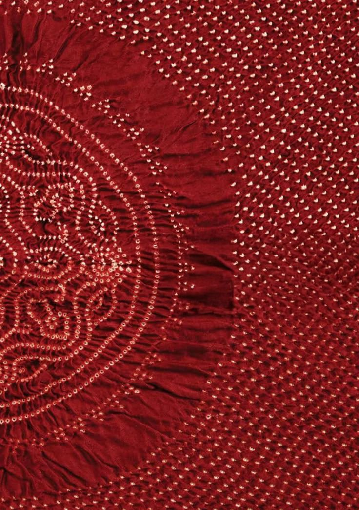
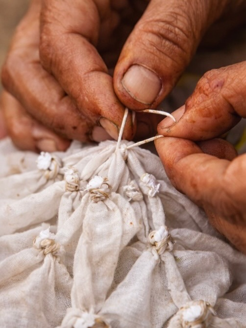
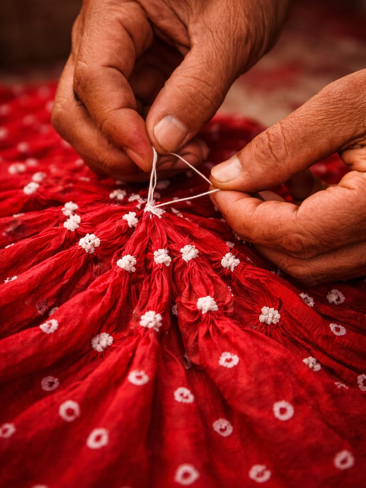
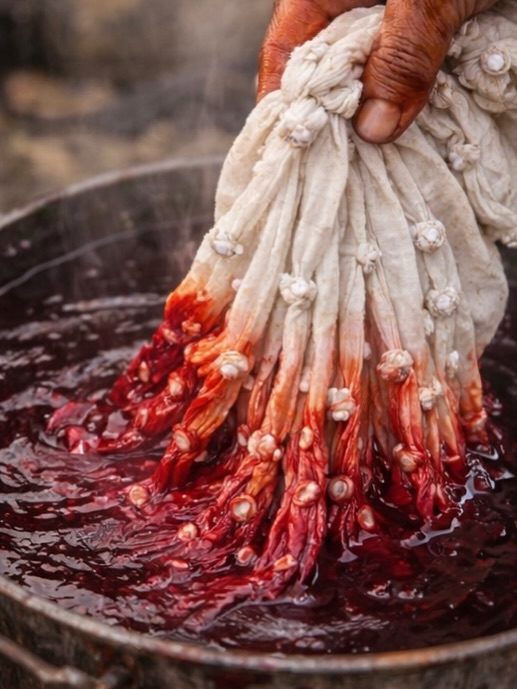
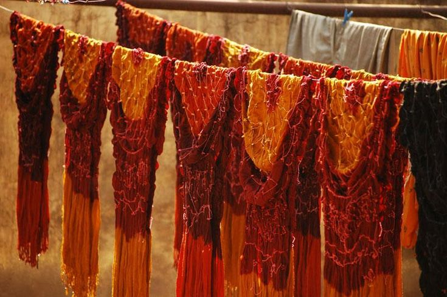
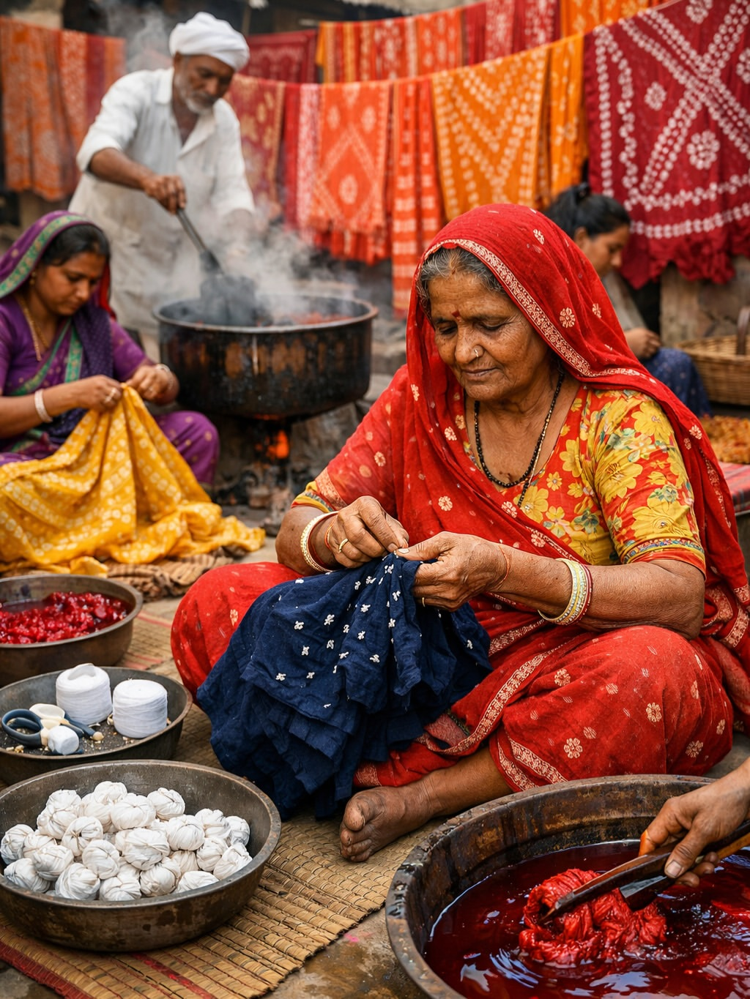

The Craft
A pattern created one tiny knot at a time.
Bandhani takes its name from the Sanskrit bandh — to bind, to tie. Practised across Kutch and Saurashtra in Gujarat, it is a resist-dye craft: fine cotton, silk or muslin is washed, folded and marked, then pinched into thousands of minute points and bound tightly with thread. Where the thread grips, dye cannot reach. The cloth moves through successive dye baths, lightest shade first. When the knots are finally opened, every tied point survives as an undyed dot.

- Origin
- Kutch & Saurashtra, Gujarat
- Material
- Cotton · Silk · Muslin
- Technique
- Resist tie & dye
- Recognition
- GI-registered craft
Made by Hand
From cloth to colour, every pattern begins with a knot.
-

01Prepare
The cloth is washed to remove starch, folded into layers, and the design is marked onto the surface so every future knot already has its place.
-

02Tie
Small sections are pinched up and bound tightly with thread — thousands of times over. Wherever the thread grips, the dye will not reach.
-

03Dye
The bound cloth passes through successive dye baths, always the lightest shade first, each stage building colour around the protected points.
-

04Reveal
The threads are cut and opened. Each tied point survives as an undyed dot, and the pattern appears across the whole cloth at once.

The Maker
Meena Ben
Bandhani artisan
Gujarat, India
Sample artisan profile
Meena Ben works in Bandhani, tying and dyeing cloth by hand in Gujarat. She learned the craft at home, as most Bandhani artisans do, and works alongside others in her collective — one person marking the cloth, another tying, another at the dye vats. She is at the Bazaar for all six days, working at the stall rather than only selling from it. Ask her to show you a single knot; it is quicker to understand by watching than by reading.
Every pattern begins with a hand-tied knot.

Thousands of tiny ties. One unmistakable pattern.
You’ve met the maker.
Stall 01
Continue exploring the craft in person.